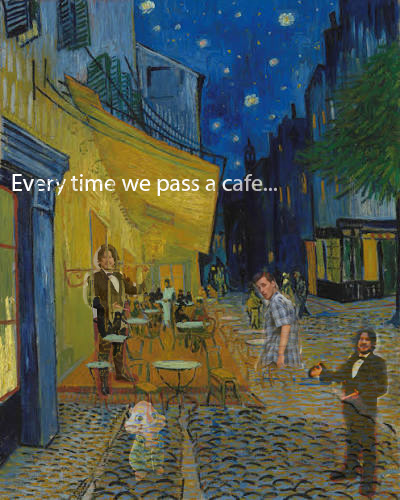

Meme Mashup
The Meme-Mashup. Using cultural references to create your own experience that is commical to others.
Artwork

Concept & Context
I used memes from the present and past that trended to build the meme of wanting more coffee anytime you pass a coffee shop.